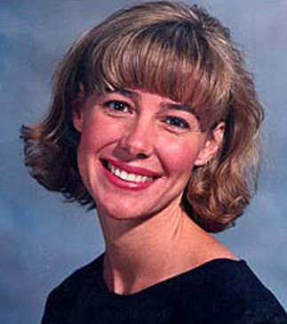
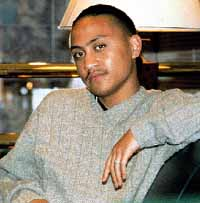
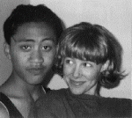
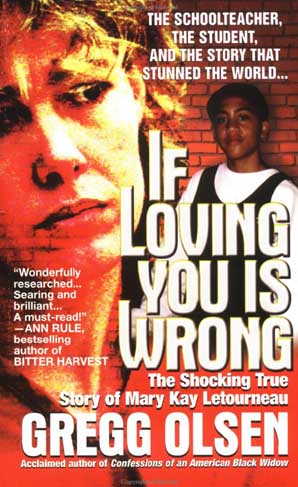
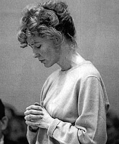
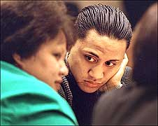
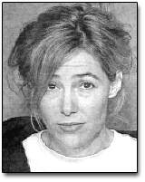
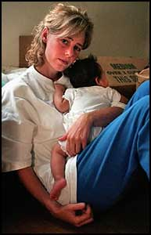

|
 Mary Kay LetourneauIn 1992, Mary Kay and Steve Letourneau moved to a quiet suburb in Seattle with their four children. They were loving parents and model citizens: Steve worked in the Alaska Airlines terminal at Sea-Tac Airport, while Mary Kay served as an exceptionally gifted and dedicated elementary school teacher in a neighboring town. She often worked twelve hour days, and parents fought to get their children into her classroom. When Mary Kay was at the blackboard, she could easily determine the individual needs of each child, and deliver extended compassion and patience where appropriate. In the summer of 1996, thirty-five year old Mary Kay began spending a lot of time with Vili Fualaau, one of her sixth grade students. Vili was a twelve year-old boy who Letourneau acknowledged was a gifted artist. She'd first met him in her second grade class, when he was eight. During the summer, she and the boy took the same art class at the local community college. She became his mentor, teaching how to play the piano and inviting him into her home. Vili began calling Letourneau repeatedly. Regular phone calls at two or three in the morning spiked the concerns and interests of Mary Kay's husband Steve: "She'd stay out until four or five in the morning, so I started digging, started looking into her 'schoolwork.' I was on a mission. I wanted to get to the bottom of this. All I was getting from her was lip service about her being a mentor for gifted students. Etcetera, etcetera." What Steve found was a stack of love letters which Mary had written to Vili: fantasy-themed nonsense like the kind of notes you'd expect high school students to pass back and forth. "Very la-la land kinda stuff," Steve remembers. Remember when the magic started, but it still seemed only safe to send our feelings through music and movie themes? Do you remember when I knew we needed each other each day, constantly, when 'I love you' was disguised so we could say it all day in front of everyone? All the love songs seem to have been written for us. Other students of Letourneau and fellow classmates of Vili wondered what was so special about him, why he got to do things in class they were never allowed to do. Like leave the classroom, for instance, and go start her car in the parking lot. It was a form of grooming, and Mary Kay rationalized that they both "needed" a special relationship, despite the enormity of difference in their ages. Vili kissed Letourneau in her classroom while the other youths were at recess. He said another teacher once heard him cry out I LOVE YOU to Letourneau in the hallway. After he started seventh grade at another school, he visited Letourneau often, where he had to sign in at the office. Vili said he and Letourneau were "intimate" in her van in the school parking lot, in the girls restroom, and in the gym. She initiated the sexual encounters, and bought him a pager which she pinged incessantly whenever he didn't respond. "I would describe her as my soul mate," Vili would later tell NBC, in an interview segment subsequently swiped by A&E and unfortunately titled Boy Crazy: The Mary Kay Letourneau Story. "I used to spy on her just to see what kind of person she was. Eventually, we had a hugging, kissing relationship going on." While Mary Kay's husband was at work, Vili became part of the Letourneau household, befriending her 12-year-old son. In June of 1996, Vili turned thirteen and his flirtatious relationship with Mary Kay became sexual. By fall, there were more than letters to confirm what Steve had suspected: she informed her husband she was pregnant with the boy's child -- prompting Steve to fly into a rage. "A dark, scary, irrational rage," according to one of Mary Kay's close friends. "I knew that I hadn't caused this. I didn't ask for this and my children didn't ask for this," Steve remarks in court transcripts. "After I found out she was pregnant, I had a whole new set of dilemmas. I'm going to call the police? Call the boy's mom? Call the school? I had these visions of calling the police and having my kids watch their mother be hauled off to jail." "It's hard to look back at the whole progress of the relationship and pinpoint a time where I could have made a different decision," Mary Kay said on the record. "I had separated emotionally from the marriage for quite a long time before I recognized my relationship with that particular student. The extra-marital part of it was very wrong. At the time the relationship became sexual, I knew I wouldn't be teaching for much longer." I was with my mother and my father this weekend, at a wedding. I just watched and thought of you when I saw couples kissing. My parents wanted to know what kind of trouble I was in. Steve called and told them to ask me. So I told them about the baby, even that you were underage -- not exactly how much. they think I could be in serious legal trouble, maybe I'm already under investigation. I need a life and death promise from you, not to ever tell about us. Not even a kiss can be told. Nobody at the elementary school knew their secret. Parents were still entrusting their children with her care, but Mary Kay and Steve realized that the impending "baby" would end any chance of keeping the scandal hidden. Of course the issue of abortion was raised, but summarily dismissed by Mary Kay. Steve told his mother about the situation, and swore her to secrecy as well -- but it was ultimately a close friend of Mary Kay who informed the cops. They swooped in during a school staff meeting in 1997, arresting her on the spot. Detective Pat Maley remembers the arrest: "Mary came out of the meeting, and I confronted her. I told her I was with the King County police department and I needed to talk with her. She said she wanted to make a phone call first. She went into the office and left a message for Steve, her husband." Steve considers that phone call the beginning of the end. Had this been a case of an older man impregnating a thirteen year old girl, the community would have been out for blood. In March of 1997, Mary Kay was charged with second degree rape of a child. At her arraignment, she pled not guilty and was released on bail. She was restricted from seeing her four children away from limited, supervised conditions. She was absolutely prohibited from seeing Vili, her thirteen year-old lover. Two months later, Mary Kay gave birth to his daughter, Audrey. While she was initially allowed to retain custody of her newborn, baby Audrey would later be taken away. A crescendo of ridicule, astonishment and outrage was polarizing Seattle, and to a lesser extent the United States. The definition of state-delineated terms like statutory rape or first-degree rape of a child were being obfuscated by public debate, media outlets, and legal analysts -- as words like love, manipulation and consensual sex were thrown in for good measure. None of that mattered to the court or her case. Her intentions did not matter, nor did the willingness or admitted consent of the participants. It was a crime because (and only because) there was intercourse. In August of 1997, Mary Kay changed her plea to guilty -- of second degree child rape, citing full responsibility for her actions and elocuting her intention to spare Vili the ordeal of testifying at a trial. On the day before leaving for jail to await sentencing, she said goodbye to her children. Steve, who had long since filed for divorce, was moving to Alaska. It was determined that the baby born of Vili and Letourneau would be raised by Vili's mother, who at the time empathized with Mary Kay and didn't consider the boy victimized. In fact, Vili's mother felt that her son would feel nothing but guilt should Letourneau be imprisoned. It was the end of life as Mary Kay knew it, and she'd spend three months in jail before her child rape trial would even get underway. One of the guards extended enough kindness to lend her some makeup just prior to her appearance in court. Her lawyer, David Gehrke, advised Mary Kay to try and look "nice," like someone worthy of release. Mary Kay's options at this point were equally dismal: lengthy treatment as a violent sexual offender, or a lengthy prison term. Gehrke argued and attempted to convince the court that Letourneau suffered from a genuine mental illness: bipolar disorder. Julie Moore, Letourneau's therapist, acknowledged that Mary Kay's pathology matched nearly all the markers for the chemical imbalances associated with bipolar. Bubbliness, grandiosity, rapid thinking without sticking to a particular subject, insomnia, indulgence in high-risk behavior without regard for painful consequences, and -- certainly not least -- poor judgment. Lawyer Gehrke was heard to remark, "How many times have I... or anyone... fallen in love while everyone around us knows it's inappropriate, and it's wrong, and it's not even love? Who are we to say that Mary was not in love?" Ex-husband Steve attended the trial, as did Vili's mother (who spoke at court in favor of treatment for Letourneau), but Vili himself was absent. Until this time, Vili Fualaau's underage identity had remained a secret in the press, but The Globe spent $50,000 to secure the rights to reveal the boy's life story. Various and sundry facts came forth about Vili's history: his father was a criminal, his mother made pastries. His family lived near the Letourneau's, but in less affluent surroundings. He was renowned for his -- let's just say maturity -- and charm. Before Mary Kay's sentence was handed down, she had the opportunity to address the judge directly. "I did something that I had no right to do, morally or legally. It was wrong, and I am sorry. I give you my word it will not happen again. Please, please help me. Help us all."
One month after her sentence for child rape was suspended, Mary Kay was released from jail, now a registered sex offender. Her estranged husband had long since relocated the children to Alaska. She sought refuge in the home of a friend, where she contemplated how to get her life back. In the meantime, she violated the most important condition of her probation: she had contact with her teenage lover yet again. Pat Maley of the King County police department strongly suspected Mary Kay would attempt to visit Vili, and placed her under round-the-clock surveillance by undercover detectives. At about 2:24am, a police officer observed a suspicious vehicle parked on the side of the road with its lights on in the heavy Seattle rain. There were two people inside: a blonde-haired woman in the driver's seat and an individual in the front right passenger seat, who of course turned out to be Vili Fualaau. A "significant" amount of steam and condensation had built up on the interior windows. Mary Kay told the officer they'd been there only six minutes, despite the fact that the ground underneath the vehicle was bone dry. Inside the van, police found Mary Kay's passport, spare clothing for Vili, and six thousand dollars in cash. It turns out that after her release, the pair had engaged in numerous meetings, secretive get-togethers at Seattle's Pike Place Market, and public excursions to see the couple's favorite film, Titanic. Letourneau's lawyer was shocked and profoundly saddened by Mary Kay's second arrest, and recoiled when new documents came into public view. During outpatient sex offender classes, one of Mary Kay's more embarrassing assignments was to come clean about the sexual attraction she'd often felt toward her own children. One therapist claimed that Letourneau was a danger to any child she came into contact with, but one humiliation overrode all others: looking her four children in the eye -- the thirteen year old, the ten year old, the seven year old, the four year old -- and informing them that while mommy was indeed a child rapist, she would try her best not to rape them as well. This exercise would be a mandatory stepping stone during her therapy, but she just couldn't go through with it. She had gone off the medication as soon as she was released from jail. In February of 1998, her second appearance in court would address the violation of her probation and her dalliance with Vili. Her appearance and demeanor were at once downtrodden and frantic. Mary Kay was described as bewildered, tense, and confused. In some photos, her eyes are very nearly crossed due to her inability to focus mentally or physically -- the opposite end of the bipolar spectrum, where an individual rapidly descends into manic depression. She did not offer a statement, and the judge did not grant leniency. The case was not about a flawed system after all, but a once-in-a-lifetime opportunity the defendant foolishly squandered. The suspended sentence was revoked, and the original sentence of seven and one-half years for the rape of a child (imposed only a short time earlier) was reinstated. In an exhausting, seemingly impossible maneuver during the tiny window of opportunity between prison sentences, Mary Kay Letourneau became pregnant once again -- with Vili Fualaau's second child. Vili's mother again adopted the product of their union, then filed a lawsuit against the school district for one million dollars, claiming school officials failed to protect her son not once, but twice. Vili wanted no part of the lawsuit, continuing to assert that he was never a victim. He hopes to continue a relationship with Mary Kay, and perhaps move with her to Hawaii or Paris. "I would not expect people to understand," Letourneau sighs from prison. "It did exist, and it was real. I love him. And honestly, when the sexual relationship started it seemed natural. What did I feel? Respect in a relationship. A mutual respect. A deep love. I love him." |
 There were numerous backstories for the judge to consider. Ironically, Mary Kay's father -- once a prominent political figure in California -- himself developed a sexual relationship with one of his students, yielding two illegitimate children. Mary Kay's mother was an outspoken opponent of equal rights who regularly pulled her daughter from class whenever the topic of sexual education was scheduled to be introduced. Initially, the judge imposed upon Letourneau a seven and a half year prison sentence, but reduced the term to six months, so long as Mary Kay received medication for bipolar disorder, had no further contact with Vili, and underwent outpatient treatment for sex offenders. Steve, admittedly, was somewhat happy to learn the news, since the ruling effectively gave his children their mother back.
There were numerous backstories for the judge to consider. Ironically, Mary Kay's father -- once a prominent political figure in California -- himself developed a sexual relationship with one of his students, yielding two illegitimate children. Mary Kay's mother was an outspoken opponent of equal rights who regularly pulled her daughter from class whenever the topic of sexual education was scheduled to be introduced. Initially, the judge imposed upon Letourneau a seven and a half year prison sentence, but reduced the term to six months, so long as Mary Kay received medication for bipolar disorder, had no further contact with Vili, and underwent outpatient treatment for sex offenders. Steve, admittedly, was somewhat happy to learn the news, since the ruling effectively gave his children their mother back.